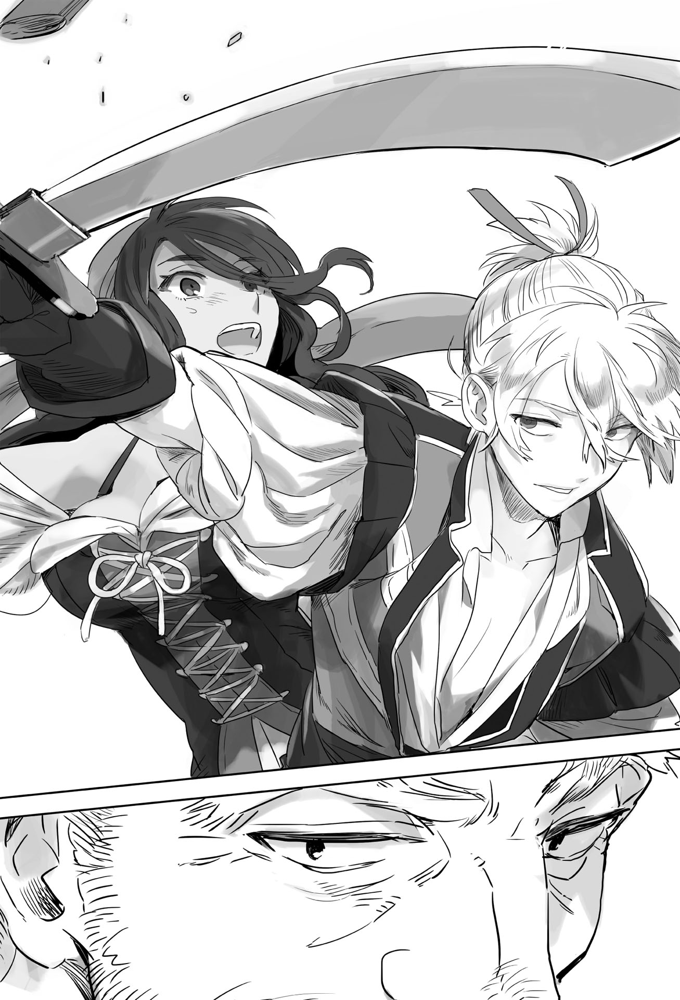

Chapter 4 – The Giant of the Sea
.
Part 1
「──Annihilation……it’s total annihilation.」
Gerald kicked his chair flying in fury after hearing the hoarse voice of the lookout.
「Don’t screw with me! What’s with this mess!」
For Gerald, he expressly abandoned his business and came until this frontline in order to obtain achievement as the groundwork for the postwar period.
By no means it was to commit a blunder that would make him got asked to take responsibility.
「──Enemy ships approaching in formation!」
Gerald let out a relieved sigh that Urraca and others chose to attack.
Gigante was slow because of its unparalleled defense, but it would be difficult to give chase if the enemy escaped.
But, it was fortunate that the enemy chose to head over here.
Gigante wasn’t an existence that could be faced with just a fleet of four ships.
It had tremendous firepower from the dozens of huge spear throwers that it carried.
In addition even if enemy ship came alongside and tried to board this ship, the size of the respective ship’s broadside was too different.
Gigante’s height was like a rampart.
It should be impossible to board this ship unless there was a monster that could leap vertically for several meters.
「Damn lowlifes! Prepare to become the prey of my Gigante!」
The pride of Majorca Kingdom, Tormenta Negra. Her head had more than enough value to gloss over his blunder of allowing the annihilation of the whole fleet under his command.
At this time Gerald didn’t even have any inkling that he would be defeated.
.
「Even so they really made something huge……」
Urraca could only give such impression after seeing Gigante.
With a size this big it would be difficult to even steer it. Its advance speed also would be really slow, so it was presumptuous for such thing to call itself ship.
Sailor had a phrase of not having speed that was used to make fun of someone else, but this Gigante literally didn’t have any speed.
「Rather than a ship, this thing is more like a castle that is made to float on sea.」
Urraca nodded in understanding at Maggot’s reply.
If that was the concept then she could understand this size and the excessive armoring.
「Well, they made a great mistake if they think that kind of shallow idea will work on this sea!」
Anything that floated on the sea could be sunk.
Urraca didn’t know anything about battleship Yamato or Prince of Wales, but she knew from experience that anything would sink equally no matter what kind of firm structure it had.
Urraca thought that hunting this slow beast that only had big size would be easier than hunting elephant.
「Midship, open all the sails!」
「Aye ma’am!」
「Signal Kailas, hound the enemy’s stern.」
「Ma’am!」
「We’re going to hound the nose of that big thing! Don’t fall behind!」
「Ma’am!」
La Mancha took a path to block the route of Gigante.
Of course La Mancha would be easily flipped over if both ships crashed, but Gigante too wouldn’t get away from it unscathed.
Would the enemy dodge or ram? Urraca had the confidence and composure to deal with it even after the enemy ship’s captain made his decision.
.
「That’s certainly an impressive ship handling. As expected from the woman who subdued that Sanpaniradeon pirate.」
When Gerald was still one of the Seven Elders, there was a time when he hired Sanpaniradeon as guard when they were still a mercenary group of the sea.
They were skilled sailors who weren’t inferior in any way compared to the escort fleet that was the pride of the maritime guild.
Tormenta Negra that subdued that group too must be a hero of this era.
But in this world there were walls that couldn’t be surpassed by individual strength.
One of those walls was a superpower like Answerer Kingdom. Another example was the difference between Gigante and La Mancha.
The armada of the maritime guild would already sink down Gigante a long time ago if it was possible to sink Gigante down by using the difference in ship handling skill.
「Draw them in, absolutely don’t let them get away!」
「Sir!」
If by any chance he allowed Urraca to get away here, Gerald wouldn’t be able to avoid a reprimand from allowing his accompanying fleet to be annihilated.
He had to bring back that woman admiral’s head by any means.
.
「Port!」
「Ma’am!」
The moment La Mancha took the direction to cross in front of Gigante from diagonally forward, a chill ran through Urraca like an electric shock.
「Hard port!」
「Ma’am!」
La Mancha sharply turned left. The sudden turn made the hull creaked.
──It was then.
It looked like black sprays flew out from the deck and side of Gigante.
It was unbelievable that arrow was shot from this distance.
It was only natural for Urraca to be puzzled.
In the first place the range of bow that sailor used was around 100 meters. That range would be reduced to 50 meters if they hoped for the arrows to be accurate.
Even at the era of Genpei War where bow and arrow were the main weapon, the arrow wouldn’t have any power at all after it traversed the range of 150 meters.
Even in the archery competition of Olympics, there were many athletes who missed their shot at a target that was 70 meters away. That was the knowledge in Baldr’s previous life Oka Masaharu.
However Urraca believed in her own instinct.
She immediately turned the ship fully in order to take distance from Gigante was because of that.
「Don’t tell me, it will reach here?」
The things that looked like black spray cut through the wind and approached La Mancha.
Urraca spontaneously groaned with how fast the things approaching. It became clear how big the object was as it got closer.
──It was as big as a spear.
Actually the weapons that were installed in Gigante were none other than gigantic crossbows with arrow that were enlarged to be as big as a spear.
The second Gigante that Gerald was riding had twice the firepower of the first Gigante. It was literally a fortress.
「Fore, main top through a back!」
「Ma’am!」
At this rate there would be holes opened in La Mancha’s hull.
No matter the era, damage to the side or bottom that caused water to flood in was the most threatening thing for the structure called ship.
Due to Urraca’s order to put an emergency brake to La Mancha, the majority of the rain of spear only pierced the sail or passed through before falling to the sea.
However some percentage of the spears accelerated due to the gravity and rained down above Urraca and others.
Even so for Urraca who had stood in front of her men in ship battle many times, something big like spear that was easy to perceive wasn’t anything to fear.
Urraca unsheathed her favorite sword and laughed.
.
『That won’t be enough girl.』
.
Sanai spontaneously came out at that timing.
It was the general rule to brush away arrow instead of cutting it.
It was also commonly called clearing away arrow. Actually many people were able to do it because arrow had light weight.
From what Sanai saw, throwing spear wasn’t used in this world.
Although the number of times Sanai saw throwing spear was used in battlefield could be counted, for example in the offense against Asai Nagamasa’s Odani Castle or in the dispute with Mountain Hiei’s Enryakuji Temple.
However Sanai lost his long time friend at that time.
Unlike arrow, a spear’s handle was thick and heavy. If one tried to cut this, they wouldn’t make it in time to make a second slash.
Besides unlike arrow, a spear’s trajectory wouldn’t change that much even if it was cut.
Sanai’s friend, Mayama Genpachi had his shoulder pierced by a spear that he should have cut. Then he was unable to return from the battlefield after another spear stabbed him.
If Urraca tried to cut the spear like how she usually brush away arrow, she would pay for her mistake with her life.
──Sanai was reluctant to allow that.
It seemed Sanai had taken a liking to this black haired brave woman.
Or perhaps Urraca’s heartrending feeling had reached Sanai inside Baldr.
As expected, Urraca cut the approaching arrow. The spear that was severed into two followed the law of inertia and approached her chest. Urraca was dumbfounded seeing that.
Her sword that had been swung with all her strength to cut the spear was already unable to return to block the spear.
Urraca twisted her body knowing that it was just a useless struggle, but she refused to have her life scattered in this kind of place.
The next moment──.
『Ye stupid tomboy, don’t slash thoughtlessly.』
Urraca didn’t understand the meaning of those words, but she understood that her life had just been saved by Baldr and he had just been insulted.
Urraca was about to reflexively protest, but before that she realized that the discomfort that she had been feeling from Baldr until now was gone.
That was none other than the back of an old man who saved her when she was about to be defeated by Kailas. The back that she couldn’t forget even if she tried.
.
「A GRAMP IS HEREE──!」
.
Urraca’s soul screamed with her jijicon after so long.
『Kakaka……ye really have a strange taste girlie.』

Sanai grinned complacently before he tensed his expression.
『It wouldst be a waste if ye don’t enjoy this battle now.』
Urraca sensed the change of presence in Baldr that was like when a moon was hiding behind the gathering clouds.
The aged presence who was Baldr but wasn’t Baldr couldn’t be felt right now as though it was just a phantom.
She didn’t understand the reason but, that too must be a side of Baldr.
Now that she understood that, she hardened her resolve that she had to seduce Baldr using any means possible quickly.
But there was something that she must do before that.
She too was a first class warrior of this era who had struggled through many scenes of carnage.
「Replace the torn sails! We’re turning around to upwind of this big thing!」
「Ma’am!」
What happened just now was a bit surprising, but Urraca’s subordinates weren’t weakling who would be scared just from this much.
Rather they were looking even livelier seeing that the enemy was mighty.
La Mancha swiftly sped up and secured the position upwind from Gigante.
.
Part 2
「──What are you all doing!」
──Gerald bit his lip because he missed the chance of a lifetime.
Even Gerald never thought that the enemy would react to Gigante’s spear throwers right from the start.
He thought that he would be able to inflict some damages to the enemy at the very least.
Even Gerald had to admit that he had underestimated the Tormenta Negra.
「Hit them no matter what! Why can’t you hit a target that big already!」
La Mancha repeatedly provoked Gigante from a distance that was just barely outside the firing range. The spear throwers had been fired five times, but they couldn’t even graze La Mancha other than at the first shot.
The distance was too big to hit La Mancha that had secured the upwind and moved freely.
Even so it was also thanks to the outrageous mobility of La Mancha.
「The second ship of Majorca Kingdom is approaching from behind!」
Kailas was circling behind Gigante while it was chasing after La Mancha.
Kailas successfully leaped within the firing range of Gigante solely thanks to his harmonized teamwork with Urraca.
Urraca had thoroughly learned Kailas’s personality and skill, and vice versa. That was why they were able to work together even without communication with each other.
「Ignore it! It won’t be able to do anything anyway!」
Gerald judged that the second ship was a bait.
La Mancha turned around as though to prove that conjecture.
「……So cold. How about looking over here for a bit.」
However Gerald was mistaken.
Kailas wasn’t just bait or anything.
His skill which brought that Tormenta Negra until just one step away from defeat wasn’t something that could be dismissed as mere bait.
「Match the trim! We’re cutting up in one go!」
「Sir!」
Even so Gigante took no notice at all. Kailas smiled wryly, even so his chest was burning with something similar like rage.
「You’re going to get burned if you look down on this Clairvoyance Kailas yeah?」
Kailas muttered that and drew his favorite bow.
The distance between both ships was about 150 meter. Furthermore Gigante’s side was high and upwind from Kailas.
It wouldn’t reach with this distance. And even if it managed to reach, it would only ended up getting deflected by the armor at the ship’s side.
In addition Kailas was nocking a fire arrow on his bow.
Fire arrow would meet greater air resistance than a normal arrow, because of that its effective firing range was shortened even further.
It was reasonable for Gigante to ignore Kailas.
「……Yosh, good kid.」
Wind would never blow in fixed direction and speed forever.
Furthermore at coastal water that was close to the land, the wind would whirl and sometimes turn around. Such thing was everyday occurrence.
Gerald who was originally a resident of Mulberry could also be said as someone who was well versed in regard to the wind of Marmara Sea, but he wasn’t a match against Kailas who sensed wind from his skin.
*Hyou* Kailas’s arrow was fired. It soared high to the sky due to the updraft that suddenly occurred.
And then like a god’s lightning that fell from the sky, it pierced deeply into Gigante’s main mast.
The fire arrow hit the top sail on the main mast. The top sail instantly went up in flame and it spread further until the main sail.
Gigante also had a certain amount of water always at ready to deal with fire arrow, but unlike the deck and ship’s side, it was extremely difficult to extinguish the fire at high location like sail.
In addition Gigante was an unusually giant ship. It was a disaster that the height of the sail and the size were also out of norm.
Gigante’s defense plan against something like this was fundamentally to not let any enemy enter the range where it was possible for fire arrow to reach.
「What are you all doing! Quick! Put out the fire quickly!」
Gerald lost control of himself and yelled furiously.
For Gerald, losing the fleet under his command was a blunder but it wasn’t fatal.
However losing Gigante meant death for him.
Regardless of the situation, Answerer Kingdom absolutely wouldn’t forgive Gerald if he lost Gigante.
The possibility was high that all his fortunes would be seized, his family banished, and even Gerald himself would be executed.
It was only at this late that Gerald regretted braving the danger to come to the frontline.
「Cut the sail and throw it to the sea rather than throwing water at the fire! Hurry!」
The crews took out their knife under the vice commander’s order and they desperately cut off the burning sails.
However cutting off sails meant losing propulsive power.
And then with Gigante’s structure, the spear throwers were only installed at the left and right sides while the rear and front became its weak point.
Of course there was no way that Urraca and Kailas would overlook that opening.
「Open all the sails! Prepare the rope!」
Gigante that was busy with extinguishing the flame was late in reacting against the rapidly approaching La Mancha.
「Enemy ship is rapidly approaching!」
「Port!」
「W-we won’t make it! It’s going to crash!」
Gigante’s giant body would decide everything if both ships collided head on.
If that happened then even La Mancha would be easily destroyed, but there was no way that Urraca would do something so foolish.
「Mizzen spanker, whole out!」
「Ma’am!」
「Fore, main top sail a back!」
「Ma’am!」
「Jive, open and change!」
「Ma’am!」
La Mancha turned sharply at the nose of Gigante like an acrobat and came to a stop in parallel of the bow.
「Throw the ropeee! Give a kick at this big thing’s nose!」
「Aye ma’am!」
Ropes with hook attached were throw one after another from La Mancha.
However the deck’s height of Gigante and La Mancha was too different.
Thanks to that Gigante’s spear throwers became useless against a ship that came alongside it because of the angle, but it would be necessary to use rope and climbed up the ship’s side like climbing a vertical hill in order to board the ship.
The most dangerous part of boarding action was when climbing up the unstable rope.
The climber couldn’t attack while climbing, and even when defending at least one of their hands would have to let go to wield a weapon.
Furthermore they would be fully visible to the enemy.
──Of course, that was only the case for ordinary people.
.
「──Annoying.」
The walking absurdity──Maggot laughed while using one hand to brush away the arrows that rained down from above.
「Fighting on sea is also nice sometimes. This might become habit.」
Similarly, the originator of walking absurdity Gina was also snapping her finger in good mood.
Baldr shook his head in depression. These two reminded him of a certain battle junkie race from other planet somewhere.
「Yeah, I know they will be like this.」
「T-this time I’ll also……orororororororo」
「Enough Satsuki, go sleep at the cabin!」
「Unyaa……I’m sorry nya……」
Satsuki was down from seasickness due to Urraca’s splendid ship handling. Her desperate show of courage ended with only her dignity as a maiden being wounded somewhat.
「The three of us are going to charge in first. Follow us after that Urraca.」
「Leave it to me!」
Urraca was staring at Baldr with her breathing turning rough.
.
Part 3
「Prepare for close quarter combat!」
Gigante wasn’t really showing agitation even with La Mancha coming alongside the ship.
They even felt thankful for it because if they could just extinguish the fire, they could deal with the enemy instead without any fear of them running away.
As befitting its big size, Gigante was also boarded by its own exclusive close quarter combat unit.
The normal warship including La Mancha would have its crews to also serve as fighter when boarding the enemy ship.
Because of that the operation of the ship would also be hindered if the damage from the close-quarter combat was great.
Gigante was able to prepare marines who were completely specialized for the role of fighting thanks to its giant size.
「Hou, so it’s finally our turn.」
The captain of the independent marine combat unit Hessen slowly stood up. His huge body that was more than two meters tall shook.
He had been thinking that just fighting merchant ships to destroy trade was insufficient.
He didn’t think that this Gigante would allow anyone to board it, but he wouldn’t complain if he could get some action.
After all he would get rusty if he got too much free time in his hands, Hessen thought with a fearless grin.
「Annihilate them all! There is no need to take prisoner.」
「Sir!」
In respect to the Tormenta Negra, Hessen gave the order of annihilation.
There was a possibility of them getting taken by surprise if they tried to catch the enemy alive.
The fire arrow just now was a good proof of that.
He would show no mercy or carelessness, he would kill the enemy wholeheartedly. After hardening his resolve, Hessen rushed out with his favorite axe in his hand.
Gerald too finally regained his composure after the fire extinguishing was finished.
The reliable figure of Hessen’s marine force was contributing to the composure of his mind.
However it still didn’t change the fact that he would have no future if he didn’t raise an achievement here.
「Archers! Target the enemy from left and right! Use the spear throwers too if the angle allow it!」
「Sir!」
First was killing as many enemies as possible while they were climbing up.
The number of crew in La Mancha wouldn’t amount to much.
It was even possible that the enemies would be annihilated just from trying to climb up Gigante, Gerald secretly thought smugly.
Certainly, even other people than Gerald would think of such result as common sense.
「GYAAAAAAAAH!」
The two archers at the left screamed and their head flew.
Blood spurted up like fountain. The torsos that had lost their head convulsed before falling down like dolls with their strings severed.
Behind them was a female warrior with her beautiful silver hair fluttering. She had appeared there before anyone noticed with her head held high arrogantly.
「W-what are you all doing! How can you allow the enemy to get up this easily!」
This was too fast.
Was boarding enemy ship something that could happen this quickly?
It was already too late when Gerald yelled to scold his men.
「GYAAAAAAAAAAAAH!」
This time a soul cutting scream came from the right. The archers over there also collapsed as expected.
Both sides only had a single opponent that caused it.
Gerald was enraged by the incompetence of his subordinates who were unable to even shoot down a single person like that.
「Don’t show such unsightly behavior just from facing two people! It’s an embarrassment to the dukedom!」
The vice commander suppressed his feeling that wanted to yell back I don’t’ want to hear that from a puppet of Answerer Kingdom like you and repeated the order.
Because what Gerald said was certainly correct.
「Push them back and bring them down! Quickly resume firing at the men behind them!」
「──No, that’ll be impossible.」
「What is imposs──」
The vice commander’s words couldn’t finish.
The last memory of the vice commander was seeing the silhouette of what seemed to be a young man with the sun on his back.
「It’s over already by the time you allow those two to get near this ship.」
Baldr jumped high in the air and landed. At the same time the body of the poor vice commander slowly split up into two from the top of his head until his crothc.
Gerald who unluckily witnessed that moment was left behind by his courage that was inside him until just now.
「HIIIIIIIIIIIIIH!」
He fell heavily on his bottom, then he desperately crawled away on all fours to get away from Baldr.
I don’t want to die, I don’t want to die, I don’t want to die!
Even though I have finally amassed a fortune. My son is going to grow up too from here on, how can I die in this kind of place.
Aa, please save me god. If I survive from here I will never risk danger anymore just to get ahead in life!
Setting aside whether his prayer was heard or not, Baldr’s sword didn’t fall to Gerald’s head.
The marine unit under Hessen’s command was blocking the way between Gerald and Baldr.
.
「……As expected I have never heard anything about this……」
A veteran soldier like Hessen only needed a glance to notice the abnormality from Baldr, Maggot, and Gina.
He dispatched two thirds of his unit to hold back Maggot and Gina, but it was unknown how long they would be able to hold out.
Baldr in front of him also wasn’t a normal human.
Hessen didn’t dare to let his guard down at the slightest in front of Baldr who was still too young.
Baldr’s calm bearing and relaxed manner was really unnatural for someone of his age.
Even Hessen was only able to keep calm in the battlefield after he was past twenty and experienced more than ten battlefield.
Just how many battlefields this brat could have experienced?
If Baldr was asked that question, he would answer like this.
I have gone through hundreds of battlefields since I experienced the grueling training of my mother.
.
「Come on! You won’t even notice that you have died if you don’t open your eyes properly you know?」
「Oh no, even though I could easily cut down two people with one swing when I was still young……」
.
Soldiers were dying with incredible speed. It was clear to see even just from a brief glance from the side.
The level difference was too wide.
「……What in the world are you guys?」
Hessen asked with cold sweat trickling from his forehead.
He felt like a newborn sheep that was dragged in front of a hungry wolf.
「We are Margrave Antrim and his party of unreasonable war maidens.」
.
「I heard that Baldr!」
「I’ll have you slowly explain later what do you mean by that.」
.
Maggot and Gina were completely in harmony only at this kind of time.
「You must have it hard.」
「You understand?」
For some reason the men were in understanding with each other.
Perhaps Hessen too was someone who received unreasonable treatment from his family.

「Why are you getting friendly with the enemy! Kill them all already!」
Man who couldn’t read the atmosphere could be found anywhere.
Even though the result of this battle had been decided since a long time ago already, Gerald still gave the order to Hessen crazily.
「Well, this too is the difficulty of serving the palace.」
──He understood that he had no chance of winning.
A match wasn’t decided by only strength, but Hessen’s skill wouldn’t be able to match Baldr no matter what kind of method he used.
Even so he still faced Baldr head on. It was his pride as a commander of Trystovy Dukedom’s marines.
「You guys surrender if I lose!」
「──You bastard! What kind of nonsense are you spewing over there!」
「We won’t be able to protect you anyway even if we fight to the last man.」
Hessen ignored Gerald who was still throwing tantrum even now and unsheathed his sword.
「Sorry to ask you this, but spare the lives of my men if I lose.」
「I don’t mind but, it’s fine even if you don’t fight me though……」
「Oi oi, if you’re a margrave then you understand right? Once a battle start, there is a formality that has to be done so that both sides can come to an agreement.」
Hessen slowly took a stance where he held his sword beside his waist.
It was Hessen’s signature move where he gathered strength in his lower body to slash.
「UOOOOOOOOOOOOOOH!」
It was a splendid slash that couldn’t be follow by eye.
However it moved like in a slow motion for Baldr who knew the speed of the Silver Light.
「……Too bad.」
Baldr’s thrust had pierced deeply, faster than Hessen could finish swinging his sword.
「……Sorry but I’ll leave the rest to you.」
「I swear on my name.」
The marines surrendered just like Hessen ordered. With that the suppression of Gigante ended in less than one hour.
The second Gigante fell into the hand of the enemy Baldr without being able to accomplish its main role in the siege of Mulberry.
.
Part 4
The King’s Gate owner wasn’t just one.
The intelligence agent of the special corrective unit Martell hurriedly journeyed back to his home country in order to report this.
The assassination squad that was already dispatched was thinking that Baldr was the only King’s Gate owner.
The precious holy relic that was their trump card to oppose King’s Gate might be lost because of such faulty assumption. Such thing had to be avoided no matter what.
And so Martell departed for Antrim. His travel was filled with troubles.
The special corrective unit was a hidden organization that wasn’t acknowledged at all at the surface.
Even his fellow follower of Europa religion couldn’t be fully trusted.
The church’s bases at each country served as base for missionary work while also functioning as antenna of intelligence gathering at the same time, but there were many of the church members that were doing work there who were currying favor with the local ruler for the ease of their own work and livelihood.
Especially at Mauricia Kingdom under King Welkin where the county was prospering and the people’s support to the government was high. The church here was also receiving monetary aid from the kingdom, so Martell couldn’t carelessly believed his fellow church members here. If they found out that Martell was a member of the special corrective unit, it would be better to consider that they would immediately inform Welkin without a doubt.
Because of that Martell was constantly keeping his act as a monk visiting the church’s branches in his pilgrimage.
He was also bringing a decree that was written directly by the pope with him just in case, but if he brought out such thing, he could easily imagine how this peaceful branch would be enveloped in an uproar.
Martell’s position within the church was bishop. The treatment and salary that he received were in the higher order. Because of that it was painful for him to be treated as a monk whose rank was the lowest.
However he convinced himself that this too was for the sake of his mission. Martell visited the church monastery in Richmond territory that was located at the southern part of the kingdom.
.
「──I am currently in pilgrimage. Please grant me your kindness as fellow brother so I can stay the night here.」
A young and tall monk was the one who welcomed Martell.
Even though both of them were wearing the same habit, the young monk’s habit was tailored from a good fabric. It seemed this monastery was quite well-off.
Looking closer, the furniture here was also in good quality. The flowers decorating the place also didn’t look like something run off the mill that were grown in the garden.
It looked like Duke Richmond was someone of a fine character as the feudal lord here.
「It’s an honor for our branch to welcome a fellow brother in his pilgrimage. Please feel free to stay here as long as you need.」
「My gratitude in the name of Europa.」
「My gratitude in the name of Europa.」
The two of them drew the symbol of Europa with their index finger above their heart as custom dictated before bowing to each other.
「Forgive me that I haven’t introduced myself. I am Martell Blind. I was a refugee from Trystovy who escaped the civil war to the pope territory and took my vow there.」
「My condolences……My name is Morass Herbal, a monk in this monastery. Please don’t hesitate to ask me if there is anything you need.」
Sympathy could be seen clearly from Morass’s eyes. Martell was convinced that Morass was a virtuous youth without any corruption.
Someone like Martell was already wracking his brain with suspicion of who could be acting behind this naïve youth.
His conjecture wasn’t mistaken based on the result.
Even if they were clergyman, they couldn’t stay unrelated from the filthiness of the world as long as they were still living in this world.
Even this sincere Morass wasn’t an exception.
The problem was that the man who was covered by that worldly filth was Morass’s superior, the bishop of the church in this Richmond territory.
「──This is unusual. It has been a long time since we last welcomed a pilgrim around here because things has been dangerous lately.」
「Ah, bishop-sama! Martell-sama here mentioned how he was a refugee from Trystovy, and yet he is still so faithfully seeking for god like this. His faith is truly splendid.」
「Hou, so you are from Trystovy.」
Morass’s words were completely based on good intention, but it seemed the way the bishop perceived it was different.
The bishop’s eyes flickered slightly with interest. Martell didn’t overlook it.
「As fellow brothers who believe in the same god, please allow me to be of help if there is anything you need. Morass, you should give him a proper hospitality.」
「Please leave it to me! Bishop Bodin-sama!」
Bodin gave a bright smile that was overflowing with compassion from outsider’s perspective. He then headed to the altar to perform his daily worship.
「How old bishop-sama is?」
Morass answered Martell’s question proudly as though he was talking about himself.
It seemed that Bodin was an excellent superior who was worthy of respect for Morass at the very least.
「He is a great person who has only turned 40 not long ago. It’s very rare for someone at that age to be able to become a bishop you know?」
Martell himself became a bishop at 35, but it was stupid to compare the underworld and the surface world.
Certainly Bodin must be a capable man to be promoted into bishop at this provincial city that wasn’t even the capital.
But at this situation that capability was a problem.
(──I was too optimistic to think that this place is just a provincial city.)
Martell thought that he should disguise himself as merchant and stayed in some random inn if it was like this.
Even so, he could just use the direct decree from the pope to enforce an order as his last resort, so he had no option of avoiding the church.
What was left was to consider how that bishop would act, but…….
「It’s a nice timing. We received fresh vegetables from an adherent today. This monastery is also raising a goat, so you can drink as much milk as you want.」
Just how beautiful this world would be if he could live completely innocently like Morass.
However in order to realize god’s will in this world, someone like him was needed to do the dirty work.
Morass’s virtue was stirring up Martell’s professional sense instead. It was the irony of fate.
Martell finished dinner and taking a bath. Then he sneakily slipped out from the room that was given to him and headed to the bishop’s room.
.
「──You are saying it’s possible that man is a spy?」
Bodin nodded seriously to a man wearing red cloak who seemed to be a government official.
(As I thought.)
Most likely the man was a retainer of Duke Richmond. There was no doubt that this man had quite a high position.
Bodin must have climbed up to the position of bishop by cooperating with Duke Richmond to receive tangible and intangible backing.
Martell had no intention to criticize Bodin for that, but it was only in this situation that such act was an unforgivable betrayal.
(Now then, what should I do……)
As expected he couldn’t suddenly capture Bodin and torture him.
Martell’s permit to enter this country was undoubtedly the real thing. It was also unthinkable that Mauricia Kingdom right now would want to worsen its relationship with Europa religion.
Even so it would also be problematic if they probed into him.
Duke Richmond had a complicated connection with Margrave Antrim.
As a bureaucrat noble Duke Richmond was politically opposed against Margrave Antrim. His heir’s fiancée Princess Rachel was also taken away by Margrave Antrim.
However regarding Trystovy’s civil war, Duke Richmond was cooperating with Margrave Antrim instead in order to drive him out from Mauricia Kingdom.
The situation in Trystovy and the policy of the church regarding the beastman blood that Margrave Antrim inherited were information that the duke would greatly wish to obtain.
That must be also why Bodin was proactively telling Duke Richmond about Martell’s presence here.
「But even if that man is a spy, he won’t make it in time anymore.」
「Can you, please tell me what do you mean by that?」
「……Actually we had received a notice that Margrave Antrim is leading a small elite force to enter Sanjuan Kingdom to head to Trystovy through sea route. This information came from Baron Wordeds whose territory was along the route that they took. There is no doubt about it.」
(……What?)
There wasn’t any sign of such movement when Martell left Antrim.
He knew that the troops there would depart from there before long, but if the already entered Sanjuan Kingdom then that was too fast.
In the first place an army wasn’t something that could be moved that fast.
Just what kind of magic Margrave Antrim had used?
Martell focused even more to his eavesdropping.
「Then Sanjuan Kingdom and Majorca Kingdom are……」
「Of course they are intending to formally push Margrave Antrim to become the king of Trystovy. If those three coastal countries join hand, it would be the same as them obtaining the control of the sea at the continent’s southern part.」
If Mauricia Kingdom and Nordland Empire also joined that alliance, then their strong would even surpass Answerer Kingdom and its subordinate countries.
(It will be troubling if that happen!)
It would be close to a nightmare for the church if a beastman like Baldr sat on the throne of a king and Nordland that was protective to those animals obtained influential voice within the alliance.
「──It will be troubling if that happen.」
「Europa religion if strongly opposing the birth of beastman king. Depending on the situation……」
「They might stop being neutral. What are you going to do bishop-dono if that happen?」
「That’s a difficult question. The order of his eminence the pope is absolute. However it’s not like we have any military power.」
Even if he provoked the believers and caused terrorism, such act would be immediately suppressed in less than a day.
Bodin didn’t wish to suicide like that.
What he sought was success in life within the church and wealthy livelihood that was befitting his position. He didn’t have the slightest wish to offer his life for the sake of his belief.
「Our country also has a lot of believers. I don’t think that all of them have hostility, but they will become an uncertain factor within the country depending on the church’s intention.」
「His excellency the duke doesn’t wish for that to happen?」
「I’ll be troubled if you ask me something stupid. My imagination cannot possibly guess his excellency’s wise thinking. However if I have to speak of my own personal opinion, then I believe it might be exactly like that.」
Bodin laughed at the man’s brazen words.
This man was a retainer of Richmond House. Everyone knew well that he was a sharp and able person who acted as the duke’s confidant.
If this man couldn’t guess what the duke was thinking, then no one else would be able to.
「It will be desirable for Margrave Antrim to die in battle as early as possible. His role as hero has ended.」
Now that the war with Haurelia Kingdom had ended in victory and Beaufort House was ruined, Mauricia had to be reformed under a new order.
If it was for the sake of that, something like the interest in Trystovy Dukedom could just be given to Answerer Kingdom.
Something like valiant heroic tale wasn’t needed for Mauricia Kingdom’s future.
「──Because of that I think we can cooperate with each other. Though this is only my personal opinion in the end.」
The man spoke to Martell through the door.
「So you noticed me.」
Martell showed himself in front of the man and Bodin without any timidity.
If pushes came to shove he would just kill these two and escaped. Martell had that much strength.
At the very least Martell could perceive that these two didn’t have the combat ability to overpower Martell.
「Pardon my rudeness. Even though I look like this I’m a bishop under the direct order of his eminence the pope. Please consider that I have been entrusted with the right to negotiate at the actual scene.」
The man opened his eyes wide. It seemed he found it surprising that Martell was a bishop.
「Hou……so his eminence is also making use of his men in a particular way.」
「A mere acolyte will only be looked down on. There is no way such gofer could be entrusted with important thing like negotiating on their own discretion.」
The man thought that people doing work behind the scene could be easily disposed of anytime, but it seemed his prediction was off the mark.
Even so it didn’t change what should be done.
「My apologies. My name is Cylease, the supervisor of Richmond House. Pleased to be your acquaintance.」
「I had taken the leeway to listen to your opinion sir. I agree that both of us can work together.」
Bodin who was left out of the talk hurriedly joined in.
「Is the rumor that the pope’s office is hiding a dark side true? Then you must have a credential from his eminence the pope with you!」
「I don’t mind showing my credential but, once you see it then I’ll have you follow my words as though it’s the order from his eminence himself you know?」
Bodin stared fixedly at the parchment that Martell presented.
Seeing that this man was working directly under the pope also meant that if he cooperated then his accomplishment would also be directly reported to the pope.
In the first place Bodin didn’t have the intention to spend his whole life in this Richmond territory.
This was dangerous but, Bodin took it as a good chance to climb up higher in life.
「This incompetent self shall exert all my effort to help in your endeavor!」
「Then tell me about the movement of Margrave Antrim you mentioned just now in detail. After that I want you to accommodate me so my return to the pope territory will progress as smoothly as possible. This will be a race against time.」
「Then first……」
.
The official carriage of Duke Richmond departed at the next morning.
Replacement horses had been arranged and money for purchasing new horses was also provided along with substitute coachman to drive the carriage in shift day and night. On top of that it also had been arranged so that the carriage would be prioritized to pass through the checkpoint at the border that was currently in battle alertness.
All of those would be impossible without the help of Duke Richmond.
Of course at the surface all of them looked like the arbitrary decision of Cylease(シーリース).
Thanks to that, although it was only just barely Martell successfully delivered the information that was even more precious than gem before things became too late.
.
Part 5
「──There are more than three King’s Gate owners?」
「Is there some kind of mistake?」
「Not even one King’s Gate owner can be confirmed since the beast king, how can there suddenly be three……」
「No no, it said that at the very least there are three, then perhaps there might be the fourth or fifth……」
「This is why we should have exterminated the beastmen quickly!」
The information that Martell brought back naturally exploded like a huge bomb in the pope’s office.
The only confirmed King’s Gate owner in history was the beast king alone.
For three people like that to be found all at once was something that nobody ever considered.
The pope’s office thought that they just needed to kill Baldr, but now things were different. Of course Baldr was still the priority, but they had to change their plan to also assassinate Maggot and Satsuki, and just to be sure Nigel and Marguerite too.
The Cornelius bloodline was just that dangerous.
「The number of the holy relics is limited──we must hurry with the study of the relics that its way of use has been lost.」
「By your will!」
The subordinates started moving with the pope’s order.
「First we have to contact the assassination squad that has infiltrated into Trystovy! Hurry!」
.
Part 6
「──Have you lost your mind?」
The information about Augusto’s arrival reached Gastone later than Piaggio.
It seemed that Augusto would arrive to this Mulberry in five more days together with eagerly-awaited reinforcement.
There was no way such stupid thing was possible.
If Piaggio believed this news, Gastone could only think of it as his rare mistaken decision due to the worsening war situation.
「Has he even thought about the distance from Antrim to here? For the sake of argument let’s just say that it’s true that they are heading here, how are they planning to break through that wall of Gigante?」
Just thinking of it made laughter welled up from the bottom of his stomach. Gastone burst into a loud laughter.
He was feeling really good.
His gloominess after getting talked down by Piaggio was blown away. This was a wonderful information.
──Reinforcement wouldn’t come to Mulberry even after five days had passed.
That would be the moment when Gastone kicked down Piaggio and it would be a day of commemoration when he grasped control over maritime guild.
「Fool……however, well, I guess it’s impossible to expect Augusto to make the smart decision with his ignorance of Gigante due to his absence from Mulberry.」
Thinking back, Augusto was also someone he couldn’t tolerate man. He was a formidable opponent even though he was still young.
It wasn’t just once or twice that he got tricked by that guy’s friendly smile and got his customers snatched away.
He was going to ruin that business rival too.
There was nothing more delightful than this.
「Know this Piaggio and also Augusto! I’m the future ruler of Mulberry!」
Gastone didn’t know that Answerer Kingdom had promised the same compensation to Gerald, a former Seven Elders.
Gastone didn’t have the awareness that in the end even he was just an insignificant pawn who wasn’t worth it to be taken seriously.
「……Send a secret messenger just to be sure. Tell them that I’ll be able to wrest control of the elder council when the reinforcement doesn’t come in five more days.」
.
Cesare grinned complacently when he received the secret messenger from Gastone.
It was unsatisfying for him that the main battlefield of this war was at sea, but it was Cesare who enticed Gastone to change side to the dukedom.
The accomplishment of taking down this great commercial city Mulberry and occupying it sould belong to Cesare in the end.
「……We should try to throw them off balance. Furthermore we should make it as grand as possible.」
「Olten-dono, didn’t you promise to not meddle with my tactic?」
「Of course, I have no intention to force you to follow my advice. But we have obtained information that there will be enemy reinforcement. It’s not right to expect that it will fail right from the start.」
Cesare made an expression that was obviously offended. Olten suppressed his desire to punch Cesare’s face with difficulty.
He wondered how could this man be this optimistic in thinking that Gigante would surely stop the reinforcement.
The opponent was the man who that Ramillies judged to be worthy for him to offer his sword to.
There was no way such man would attempt to break through the blockade recklessly without any plan.
Perhaps he even had the expectation to somehow manage Gigante?
Even if that wasn’t the case, the possibility of the reinforcement arriving one or two days late wasn’t low at all.
They should put great pressure on Mulberry’s defenders that they would feel there was no hope for them to win this war in order for the dukedom army to end this siege battle completely within five days.
But Cesare didn’t know about Ramillies’s existence.
To say nothing of Baldr. Cesare only thought of him as a brat who rode the trend of the age by chance and luckily climbed up in the world.
He didn’t understand why Olten was acting this impatient. He only laughed it off mockingly thinking that the tale of how even a kirin would be reduced into nothing more than a crippled horse at its old age was true.
In the first place Olten was a type of commander who hated for his ally to be damaged.
And yet he was advocating a way of fighting that would bring greater casualties to the soldiers. Cesare didn’t understand the meaning of his action.
「I can’t see any need to pointlessly waste the lives of our country’s precious soldiers here. You should just quietly watch from the back how my army obtain victory.」
──The air froze at that moment.
Cesare unconsciously backed away from feeling a chill as though an icicle was stabbed into his back.
There was an invisible pressure in the air. This pressure suddenly pushed him back.
Cesare trembled when he noticed that the source of this was Olten and that this pressure was undoubtedly killing intent.
「H-how dare you acting so rudely toward this me who received the confidence of his majesty!」
Cesare was far younger than Olten and his body was also a size bigger, and yet he didn’t have any confidence at all to win against Olten one-on-one.
He would lose if he fought. He would be carved to pieces helplessly.
Although Olten had grown old, he was still a swordsman who was considered as among the top five in the dukedom even now.
「──You brat, don’t underestimate war.」
Even the knights who should be protecting Cesare couldn’t make any voice in front of the martial might that was radiated from Olten who brought down his own lord the king and continued to protect the dukedom until now with his whole body and soul.
「I have said what I should say. What’s left is only for you sir to fulfill your responsibility with your life.」
Olten spat out those words and turned his back on Cesare to leave the camp.
The moment Olten’s figure vanished from view, Cesare was released from his paralysis and raged.
「How dare you! Don’t think that you will get away with this after this battle is over!」
The accomplishment of bringing down Mulberry should bring him glory that even Olten wouldn’t be able to rival.
The archduke too would surely recognize him as a far more important retainer compared to than an old retired has-been.
At that time, a relic of the past like Olten wouldn’t have any place to belong anywhere.
No one would pay him any respect and then he would die alone far away from any honor without anyone knowing.
「All of you listen, never let him pass to meet me anymore! Who is going to listen to that old man’s nagging anymore than this-!」
.
Part 7
The ground combat commander who was formerly a mercenary, Gustiniani considered the rampart protecting Mulberry as the very definition of firmness.
However in actuality it didn’t mean that the defense here was completely unshaken.
「……Say, is the rumor that reinforcement will come in five more days true?」
The mercenaries here were able to maintain high fighting spirit because they were guaranteed limitless supply.
The moment that they recognized defeat as inevitable, all the mercenaries except a small fraction would start scrambling to escape with their own survival as priority.
Gustiniani who was also a mercenary in the past was thoroughly knowledgeable about the strong and weak points of mercenary.
「That story is a bit suspicious yeah? Especially because it’s Gastone and his faction who are spreading this rumor.」
It was a well-known fact to anyone living in Mulberry that Gastone was in the faction that wished to submit to the dukedom.
And yet right now he was spearing a rumor that made anyone held hope. It was suspicious.
It was also a problematic that the rumor was accompanied with deadline.
「If the reinforcement doesn’t come in five more days……」
「The morale will definitely drop. If the supply also gets delayed at the same time, the moral damage might be fatal.」
The two had seen through that Gastone’s aim was that.
But even knowing that, there wasn’t any effective countermeasure to oppose it.
「Just spread around that we can’t expect much on the accuracy of ship’s arrival schedule.」
「Well, that’s valid I guess.」
It would be fine if the schedule was wrong only by one or two days. However if the lateness continued as long as four or five days, as expected they wouldn’t be able to avoid a breakdown somewhere in Mulberry.
──Troublesome.
The only silver lining here was that the dukedom army wasn’t trying to agitate the defenders who were harboring such worry.
「I heard that the enemy commander Cesare is someone unconcerned with damage to his allies, but did he has a change of mind?」
Or perhaps this was the composure of the victor.
However Gustiniani knew very well that the confidence of victor was sometimes just a useless object in the gambling that was called war.
「I wonder which side is being self-complacent here. I too am relatively good in being self-complacent though.」
「If I have to say which type captain is, then you are the type who like to see the self-complacent guy stumble so you can act self-complacent back at him.」
「You ain’t wrong.」
He loved seeing those guys who liked to show off their vanity about the pride of their country or the pride of knight or whatever getting tripped up and cried.
Gustiniani prayed to Baldr and others who he still hadn’t met.
── Please give me a chance laugh at those shitheads from the dukedom.
.
Part 8
──Five days passed.
Not only the Seven Elders, even the sailors at the harbor already known what the meaning of this day was. There was no one who didn’t know.
The city was enveloped in restless atmosphere during these five days.
Seeing that the amount of ships coming and going was decreasing due to the sea blockade was also spurring their expectation.
「……Fufufu……the day that I have been waiting for all this time has finally arrived.」
Gastone watched the sun starting to rise high up in the sky and illuminated the sea dazzlingly. He couldn’t hold back the smile from forming on his face.
He had allied himself with the companies that were struggling due to the sea blockade and bounced of ideas with Cesare about things to do after the battle was over, all for the sake of this day.
Piaggio and the others must be running around like headless chicken around this time. Gastone’s nose twitched in elation when he imagined that.
Even with that old man’s skill, there should be nothing he could do at this time.
The needless news from that greenhorn August drove Mulberry into a predicament instead.
Mulberry still had enough water and food and fund for one month. No, if they were just going to hold the city during this siege then they could even last for half a year.
But the merchants who were living in Mulberry couldn’t possibly relax and closed their shop for half a year.
Just how many merchants there would be who could persist even after the hope that finally appeared was betrayed.
In Gastone’s approximation, at least forty percent of Mulberry’s merchants would become his ally after this.
「The era where the guild can pretend to be an independent country is already over!」
.
The sun had climbed to the zenith. The expectation that had heightened in inverse proportion to the blazing down heat was withering.
So the reinforcement wouldn’t come just as expected?
Was it impossible to break through the sea blockade of the dukedom?
The sun slowly went down. The closer the sun became to the horizon, the expectation of Mulberry citizens also clearly changed into disappointment.
──It was then.
「Oi, that’s-?」
「Don’t tell me……they really came!」
The lookout who was glaring at the horizon with a sliver of hope jumped on his feet.
He was able to clearly see a fleet of dozens ships and a conspicuously large warship approaching from behind them far away at the horizon.
「……What? What’s that stupidly huge ship……」
Only a very limited number of people knew that the dukedom had dispatched Gigante.
The people who didn’t know anything naturally believed that Gigante was also a part of the reinforcement.
However Gastone was different.
Gastone who received the report from the lookout peered out to the horizon from his terrace. He was gritting his teeth.
Gastone possessed an almost completely accurate information about the dukedom’s Gigante.
「Those damn incompetents at the dukedom. They can’t even capture a trifling fleet like that.」
Most likely Gigante was led around by the nose by Majorca Kingdom’s fleet and failed to apprehend the reinforcement.
At this rate the fleet that was in front of Gigante──the reinforcement would be able to escape.
Furthermore──.
「Oi oi, why isn’t it stopping?」
Gigante wasn’t changing direction at all even as the harbor of Mulberry was getting closer.
Was it going to forcefully rush inside the harbor just like this?
Was Gigante’s battle strength that powerful?
That would be inconvenient for Gastone in two meanings.
If it successfully rushed into the harbor, the chance that Gastone obtained with difficulty to earn accomplishment would be gone. But if Gigante failed, the pro war faction in Mulberry would gain even more momentum.
Gastone’s thought was torn to pieces by this completely unexpected development.
It was said that human would become dull-brained if they became poor.
Even a human that normally possessed calm judgment could make a foolish decision that they normally wouldn’t even consider when faced with failure and worsened the situation even further.
Gastone was exactly someone like that in this moment.
「If Gigante is rushing into here, then my fleet will ally with the dukedom! That’s the only thing that I can do here to change the war situation all at once!」
There was no image of defeat within Gastone’s brain.
His mind was fully occupied by how much status he could monopolize after the war.
.
Gastone’s private fleet that was on standby inside the bay received Gastone’s order and entered battle preparation.
In addition several merchants who were in cahoots with Gastone also followed his example.
Currently many of the guild’s ships had been dispatched as guard to oppose the sea blockade. And so the battle strength of these traitors was around twenty percent of the force that was stationed in Mulberry right now.
It seemed that Piaggio and Barbarino’s fleets had also finally noticed Gigante’s presence, but their reaction was too slow.
──Perhaps it would also be possible to deal the finishing blow to Mulberry’s sea force here together with Gigante.
How would Gigante move in the end?
Gastone stared at the gallant figure of the approaching Gigante with a prayer.
.
「Oh ho, they‘re really biting the bait there!」
Urraca lifted up the corner of her mouth in exasperation.
With her eyes, it was clear from a glance which ship was harboring hostility toward them.
「Things will really move just like that fella thought if it’s like this……」
.
It was Augusto who suggested bringing Gigante along with them until Mulberry.
The number of prisoners was too many for this Gigante to be burned down at that place.
「Well normally capturing an enemy ship and showing it off will lead to the increase in fighting spirit……」
Baldr sensed the unspoken meaning in those words and asked Augusto in amusement.
「Then what will happen in the abnormal case?」
「Please try to imagine it a little. To those who know about Gigante, what will they think when looking at Gigante approaching from behind?」
Augusto shrugged theatrically and laughed after saying that.
This bastard is acting all cool and stylish, a vein lightly pulsed on Baldr’s forehead, but he understood what Augusto was trying to say.
「We might be able to pull a big catch. Either way this is just brutal though.」
Are you trying to something smart with that, Augusto thought, but he hid it with a cheerful smile.
These two had similar way of thinking, and yet their compatibility with each other just wasn’t good.
「It’s just a possibility in the end, but if possible I want to push out unnecessary pus while we have this chance.」
The matter wouldn’t end with just the battle at Mulberry.
After ushering in Baldr, the maritime guild would hoist the banner of reviving Trystovy Kingdom and went into an all-out war against the dukedom.
At that stage, path of reconciliation would only become a dream within dream.
People like Gastone in the submission faction would undoubtedly choose to turn traitor if it became impossible for them to seize control or compromise with the guild.
There was no need to keep such potential traitors around forever.
If it was possible to smoke them out then that chance had to be seized.
「……However will they really bite with just this?」
「The possibility is fifty-fifty I think, but I want to bet that they will bite. After all the man named Gastone is a man who seriously believe that there is no one as smart as him in this world.」
Augusto answererd Maggot’s question with a mischievous smile.
──It was important to believe in oneself.
Especially the people who were in the position with responsibility where they had to make decision. It would be a tragedy for those who couldn’t be confident.
They would hesitate when it was time to make a decision, and sometimes they would postpone from making decision.
However having excessive self-confident was also problematic.
The man named Gastone had committed several large blunders until now.
However he didn’t go bankrupt because he had quite the capability and luck to obtain success that surpassed his failure.
He wasn’t a patient man by any means. Augusto thought that there was enough prospects of success.
「You’re in luck buddy.」
「Haa?」
Augusto let out an unusually befuddled voice because he was unable to understand the meaning of Urraca’s words.
「Throughout this continent there is only Kailas and me who can take along this big thing along with their fleet.」
Gigante had a stupidly huge size and its main mast had also been burned. Its speed was even slower than a transport ship that was fully loaded with soldiers.
The fleet’s speed would have to be reduced drastically in order to bring Gigante along until Mulberry.
「Ah!」
Augusto who didn’t consider that fact covered his red face with his hand.
It was easy to think a plan, but it was difficult to carry it out. He forgot such basic of basic.
「Rejoice! Tormenta Negra will definitely bring along this big thing. Don’t worry, I’ll have Baldr pay the bill for this one day!」
「Can you not put it into my bill as you please like that?」
「This battle already belong to Baldr now. You should at least accept a small condition like this.」
Augusto’s scheme and the battle of maritime guild too were nothing but a mean for Baldr to take back Trystovy.
Baldr was at a loss for words precisely because he was aware of his position.
「You guys! Leave behind just the minimum number of people in the ship and the rest will all move to the big thing! Put up temporary sails quickly and place some people to handle the sails!」
「Aye ma’am!」
The heaven-sent child of the sea Urraca whose eyes could read the wind and had the sea god as her ally. The crews who became her arms and legs were a gathering of masterful elites.
That was the reason why the fleet was able to arrive just barely within the deadline of five days.
.
Part 9
「Ooooh!」
Gastone witnessed one of the transport ships that got caught up by Gigante suddenly went up in flame.
At the same time the two warships that were at the rear started to sail in front of Gigante with zigzagging movement. The ship at the forefront was increasing its speed toward the harbor.
It was definitely a battle action.
There was no doubt that the ship at the forefront was heading here to ask for help. Gastone was convinced of that.
「Set sail!」
── Now, realize it, you senile old men who looked down on me.
If the reinforcement that finally arrived was crushed right before their eye and one of the Seven Elders who was an ally until now turned traitor, the whole Mulberry would realize that they didn’t even have one in a million chances to win.
Gastone became unable to stop a dark smile of joy from slipping out just from imagining what kind of face they would make while begging for their life.
「Slow ahead! Don’t take hostile action just yet. We’re going to get as close as possible before starting the attack!」
The fleet of eight ships that Gastone led took the lead and expanded in half circle formation to surround the approaching La Mancha.
It was strange that the reaction of the guild’s fleet was still slow.
There was no way they were thinking that the reinforcement had finally arrived even after seeing that Gigante right?
Piaggio and Barbarino should also have known about Gigante’s existence…….
Or perhaps they kept this information secret from their subordinates?
Gastone shouted to cut himself free from his hesitation.
「Listen, both wings are to attack all at once as we pass that ship, after that we will launch pincer attack to the two ships ahead! We are going to join up with Gigante and take care of the transport ships!」
He was able to reach this point because he never hesitated in making a split-second decision just like now.
.
「No one is going to get caught by such plainly suspicious scam.」
Urraca had returned to La Mancha. To her it looked like Gastone wasn’t trying to hide his intend to fight at all.
At the very least he should hoist a white flag and pretended to give an advance warning. He also should order his troops for close-quarter combat to hide inside instead of placing them at the deck openly like that.
It was a big mistake if he thought that this side was a cornered bird that flew into a trap.
「Then can I leave them to you, Okaa-sama ?」
Urraca had hit it off completely with Maggot before anyone realized it.
Urraca was fundamentally someone who lived in the field at the middle of the action unlike Silk who was a young lady of a great noble. She was the type of woman who Maggot also liked.
Even though she was someone with too much baggage to be a wife of Count Cornelius, her value was immeasurable if it was for the position of Trystovy king’s concubine.
The rest depended on Baldr’s heart, but Maggot thought that it was impossible for her fickle son who was similar with Ignis at his youth to continuously avoid Urraca’s approach.
「Aa, I’ll take the ships that came from the left.」
「……Then I’ll take the right.」
「Obaa-sama too please do as you see fit.」
To be more precise Gina should be called as great-grandma, but her appearance was too youthful for that.
「I still can’t let myself be beaten by the youngsters.」
「Ufufu……」
「Hahaha……」
Urraca couldn’t stop cold sweat from trickling down her forehead due to the unearthly atmosphere that couldn’t be hidden from the two.
.
Gastone’s fleet that didn’t even have any inkling that there was such conversation going on finally caught La Mancha within their bow’s range.
「Archers, ready-!」
First they would launch preemptive strike to push the opponent into pandemonium.
Gallia who was entrusted to lead half the ships was a veteran sailor who had worked for Gastone since ten years ago.
His age was approaching the limit of his ability to stay in active duty. For him, this sea battle could be said as his last stage to shine.
Gallia directed the ships to the bow firing range with a silent fighting spirit.
At the same time, what he was doing also brought his ships within the field of activities of two monsters.
「Raise the battle flag! Archers, fire!」
Declaring hostility by raising the battle flag right before attacking was a method of foul play. It was rewarded by two monsters that flew in the air like bullet.
Several arrows were brushed away midair, then immediately after that a silhouette landed down on the deck.
「T-that’s impossible!」
Gallia screamed in astonishment.
The distance between his ship and La Mancha should be 30 meters.
The relative velocity between both ships was more than 10 knots.
This monster jumped under such situation and furthermore from above a ship that was shaking from the wave until this ship.
There was no way a human could do such feat.
.
「How long are you going to make stupid face like that?」
.
A brazen beautiful face that was illuminated by the setting sun and pretty silver hair fluttering in the wind.
And then a composure of the strong who possessed absolute confidence in her own might. A weak person like Gallia instinctually felt fear as though his back was frozen.
「Shit! The enemy is just one! Surround and kill her!」
The marines had finished their preparation for close-quarter combat, even so they moved fearfully from the pressure and surrounded Maggot.
「──Just say it if you guys want to surrender. That will save me the time, and it will also reduce the casualties.」
「Big talk!」
A large man──the captain of the marines was enraged and charged forward. He was pierced by Maggot’s spear in the blink of eye and with an inhuman strength his body flew through the air.
Surprisingly the man’s body flew until the main mast’s gallant sail and bounced there to fall toward the top board.
Maggot grinned with her white canine bared at the soldiers who were dumbfounded by the impossible happening.
「Now, I’ll accompany you guys until you surrender. Who’s next?」
.
Gastone who never even dreamed that such thing would happen to his fleet felt a chill that gave him goosebumps along with an uncomfortable feeling.
── What? What’s this uncomfortable feeling?
Looking carefully, the transport ship that went up on fire just now couldn’t be found anywhere as though it had already finished putting out the fire.
Furthermore even though the distance between Gigante and the transport ships had been closed, he couldn’t see any sign of battle going on.
What was the captain of Gigante thinking?
「Raise the white flag! Flag-bearer, make this signal! I am Gastone. We’re prepared to cooperate, end!」
「Sir!」
Flag signals were exchanged in a flurry between Gastone’s flagship and Gigante.
The flag-bearer’s complexion was quickly turning pale. Gastone questioned him in irritation seeing that.
「What’s wrong? What are they saying?」
「T-that’s……」
While the flag-bearer was hesitating to say, a flag with crimson fabric and blue and white griffon drawn on it was being raised up on Gigante’s main mast.
.
──There was a country that used that crest in the past.
Gastone’s memory before he hadn’t become a member of the Seven Elders and he still belonged to that country that didn’t exist right now was roused regardless of his intention. It pushed him into confusion.
「I-impossible! Something like this is just unacceptable-!」
The flag-bearer pushed down his desire to rant just like Gastone was doing and he fulfilled his duty.
「This is Trystovy Kingdom’s flagship. From here on we’re going to exterminate those who wish to harm our kingdom. Nyah nyah nyah」
Gigante’s huge body turned right with a creaking sound.
「Cursed ghost! What kind of magic they were using?」
He had to run away as fast as possible.
Now that it came to light that Gigante was an enemy, the difference in battle strength was overwhelming.
But Gastone was driven by unreasonable anger toward reality and wasted his limited time that was even more precious than jewels.
「Answer me! Who in the world are you bastard? Augusto! No, Baldr Antrim Cornelius!」
Gigante finished turning. At the same time the lance throwers at its port opened their ferocious jaw.
It was already too late when Gastone returned to his sense in front of that thick premonition of death.
A light that cut through the air pierced Gastone’s chest and his body got pinned on the foremast.
The rain of spears directly hit the flagship one after another, opening holes all over it. The ship immediately vanished to the bottom of the sea.
The ship behind it also got mixed up and sunk. The remaining two ships dropped their anchor and surrendered.
The striking power of Gigante that cornered Mulberry until one step away from defeat was genuine.
.
「──Yell the shout of victory!」
The cry of triumph that welled up from Gigante was immediately spreading to the transport ships around it and also La Mancha.
That voice went further until the guild’s armada and expanded to the whole Mulberry.
Everyone was feeling tired toward the long war somewhere in their heart.
The hero named Baldr and the crest of Trystovy Kingdom that symbolized its revival brought hope and joy to the citizens of Mulberry.
「Fumu, it looks like it has been decided.」
Piaggio looked down at the citizens who all cheered in joy. He realized that the standing of the maritime guild toward Baldr had been decided with this.
With this they were completely unable to position themselves as an equal partner to Baldr.
At best they would be able to give some conditions of their own but only as a retainer of the kingdom.
「……I couldn’t believe it when the messenger pigeon from Augusto came but……」
Actually the truth was only told to Piaggio from Augusto’s messenger pigeon.
After that Piaggio kept the secret while feeling half doubtful during these five days.
With this the situation surrounding Mulberry would change drastically.
The feeling of relief from being liberated from the heavy pressure of defeat that he felt was bigger than the feeling of being defeated by Baldr.
「──Trystovy Kingdom, banzai.」
That’s an embarrassing line even if I say so myself , Piaggio thought with a wry smile.
.
Later on it would be written in history record that this day was the day when Baldr Antrim Cornelius fired the starting signal of Trystovy Kingdom’s revival.